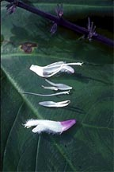

THE BOTANY OF SALVIA DIVINORUM (LABIATAE)Materials and Methods Fieldwork carried out during the winter of 1983-84 consisted mainly of searching the Sierra Mazateca for populations of S. divinorum. Flowering populations near Cerro Quemado, a village on the western side of the Aleman Dam, were visited in October, 1985, and watched for two days and one night in order to note any visitors to the flowers. Plants were observed during the night by periodical inspection using a red-filtered incandescent lamp. After being visited, flowers were inspected to see whether pollen had been deposited on the stigma, and whether the store of nectar had been depleted. Plants of S. divinorum from several sources were propagated at the University of Wisconsin-Madison Botany Department (UW) Greenhouses. Valdes generously provided potted plants derived from three sources: a collection from Cerro Rabon, near the Mazatec village of Ayautla, a collection from near the village of Cerro Quemado, and clonotypic material obtained from Berkeley. Later, plants I collected near Cerro Quemado (Reisfield & Solheim 1102) and Ayautla (Reisfield & Solheim 1102) were added to the living collections. Valdes learned from Robert Ornduff (pers. com.) that plants grown in the gardens at both UC Berkeley and UCLA formed flower buds that subsequently reverted to vegetative growth. (This, in fact, also occurred on plants growing in the UW greenhouses during the winter of 1986-87). Apparently, a limited exposure to light during the night will upset the hormonal mechanism by which the plant perceives a decrease in daylength. Thus, beginning in late October, 1984, a subset of plants at the UW greenhouses were subjected to artificially shortened days of 8-10 hours by covering them with a black cloth each afternoon. Flowers were hand-pollinated by removing the stamens and immediately brushing the dehiscing anthers against the inner surfaces of both stigma branches until pollen grains adhered to the stigma. Self-pollinations were performed within individual flowers, between flowers of the same plant, and between plants derived from a common source, while cross-pollinations were performed between plants derived from different sources. Pollinations were performed at different times during the day (and night), and between flowers of different ages. To study pollen germination and pollen tube growth, styles were collected from flowers that had been self- or cross-pollinated between 4 and 18 hrs earlier. The styles were fixed in FAA and stored in distilled water at approximately 5¯C. They were cleared with 8N sodium hydroxide for 24 hrs, then taken through several washes with distilled water, and stained with aniline blue at a concentration of .01 percent for 4 hrs. Fluorescence microscopy was performed with a Zeiss microscope equipped with a Zeiss UG1 excitation filter and 47,-65 barrier filters. The UV source was an Osram HBO 200W mercury vapor lamp. Staining and microscopy techniques mostly followed Martin (1959) as modified by Stettler and Guries (1976). Styles were slightly crushed beneath a coverslip and observed whole in a darkened room. The callosic lining of the pollen tubes fluoresces a bright yellow-green, but the amount and distribution of callose varies between taxa (Martin 1959). Scanning several unrelated species of Salvia showed that pollen tubes come in and out of visibility over the length of the style, and can easily be distinguished from the two vascular bundles which fluoresce a uniform, much less brilliant yellow. Since fluorescence was most visible at the stigmatic and ovary ends of the style, an inability of the tubes to reach the ovary should have been readily detectable. Pollen grains from FAA-preserved flowers on wild and greenhouse-grown plants were analyzed for cytoplasm stainability. Sterile or aborted pollen grains did not take up the cotton blue-lactophenol stain, and were also conspicuous by their shrunken size and shriveled form. Nectar studies included an analysis of constituents, a study of daily secretion patterns, and also total volumes produced per flower. Calibrated micropipettes were inserted into the pool of nectar that accumulates at the base of the corolla tube, with nectar extracted by capillary action. Sugar concentrations were measured with an Extech model 2132 pocket refractometer, with several nectar samples also analyzed for sugar constituents (ratio) by Irene Baker at UC Berkeley. The nectar was spotted on Whatman #2 filter paper, the diameter of the spot outlined with four pencil marks, and the volume and percent sugar for each spot provided to Dr. Baker. Young anther sacs were dissected and meiocytes squashed according to the technique of Beeks (1955). These were viewed with a Zeiss phase-contrast microscope. |